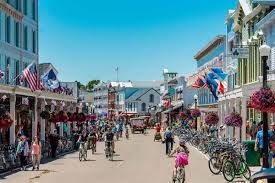
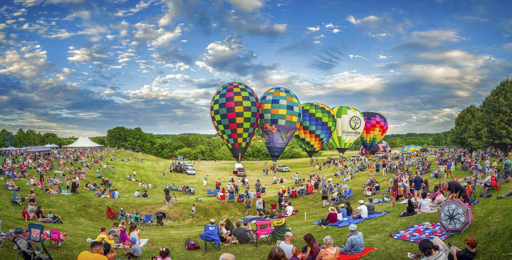

Mackinac Island vs. Galena Balloon Festival
By: Nicholas Guzman
Because our family still can't come up with plans after a year of talking about this. I have made a simple comparison of Mackinac Island and Galena, Illinois.
Get StartedCost
Mackinac Island is more expensive than Galena, Illinois.
Activities
Mackinac Island activities consist of biking, horse carriage tours, hiking, and visiting Fort Mackinac. Whereas, Galena offers historical tours, vineyards, and ofcourse the hot air balloon fest.
Travel Time
Mackinac Island is about a 6.5 hour drive plus a ferry ride, while Galena, Illinois is about a 2.5 hour drive.
Mackinac Island

Location:
Mackinac Island is located in Lake Huron, Michigan. This is about a 6.5 hour drive from the house. We would also have to take a ferry to get there.
Cost of Mackinac Island
- Ferry: $30–$35 per person
- Hotel: Varies, can't give a definite answer without more specific information.
- Food:
- Budget-friendly options ($10–$15 per person)
- Pink Pony
- Yankee Rebel Tavern
- The Chuck Wagon of Mackinac
- Mid-range dining ($15–$25 per person)
- Millie's on Main
- Kingston Kitchen at the Village Inn
- Woods Restaurant
- Fine dining ($30–$50+ per person)
- 1852 Grill Room
- Carriage House at Hotel Iroquois
- Chianti
- Budget-friendly options ($10–$15 per person)
Keep in mind there are many mini shops as well, so we will probably spend a little extra getting snacks.
Activities:
- Biking around the island
- Hourly Rates: $10-$15 per person
- Half-Day Rentals: $30-$40 per person
- Full-Day Tentals: $50-$100 per person
- Horse carriage tours($44 per person)
- Fort Mackinac Tour($17.50 per person)
- The Original Mackinac Island Butterfly House & Insect World ($15 per person)
- Hiking and lake views(I think free)
- Walking around the main street(idk how much we would end up spending on this)
Pros:
- No cars - unique
- Beautiful Scenery
- Lots of activities
- First family trip
Cons:
- Will be very expensive
- Long drive and ferry ride
- Very busy in summer
Now we will move on to Galena, Illinois
Galena Balloon Festival

Location:
Galena is location in the Northwestern part of Illinois. It is about a 2.5 hour drive from the house
Cost of Galena, Illinois
- Hotel: Varies once again
- Food:
- Variety of food and drink vendors offering local and seasonal specialties ($5-$10)
- Nearby dining ($15-$30 per person)
- The Galena Country Inn
- The Eagle Ridge Resort
- Local pubs
- Activities:
- Galena Cellars Vineyard ($12-$25 per bottle)
- Balloon Festival($5 per person)
- Galena River Trail(Free)
- Galena and U.S. Grant History Museum($10 per person)
Pros:
- Closer to home
- Less expensive
- Family Trip
- Balloon Festival is a unique experience
Cons:
- Not as many activities
- Not as scenic
Why Choose Mackinac Island?
Mackinac Island offers beautiful scenery, a unique no car policy, and plenty of activities
Why Choose Galena?
Galena is closer to home, less expensive, and has the unique experience of the balloon festival.
My Take
Personally, as someone who hasn't traveled to an island, I can see the appeal with Mackinac, However, I know how expensive it can be, and as someone who isn't paying for the trip I would feel guilty if that is the reason why we end up going to Mackinac. I would also enjoy Galena's Balloon Festival and think it would be a great beginner trip with the family.
Make your choice